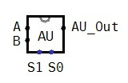

Overview
The ALU (Arithmetic Logic Unit) is a major component of the CPU. It performs arithmetic operations and responds to logic (yes/no) questions. The ALU must also be able to transfer values unaltered. The ALU is a combinational circuit that consists of two major sub-circuits: an arithmetic unit (AU) and a logic unit (LU). An arithmetic unit generally consists of full adders, subtractors, multipliers, etc., while the logic unit consists of numerous AND, OR, NOR, etc. gates. Today, we will build the arithmetic unit (AU). The LU will be added in a later lab.
The arithmetic unit of the RSC must be able to take in two 32-bit operands and output one 32-bit number which is the result of one of four possible arithmetic operations. If the inputs are called A and B, and the output is called F, then the arithmetic unit must be able to perform:
-
F = A – B
(subtraction)
-
F = A + B
(addition)
-
F = A + 1
(increment)
-
F = B
(transfer)
Since there are four operations to be performed, we will need two 1-bit inputs (S1 and S0) to control which operation is to be calculated. Your arithmetic unit should operate as follows:
| S1 |
S0 |
Result |
| 0 |
0 |
F = A - B |
| 0 |
1 |
F = A + B |
| 1 |
0 |
F = A + 1 |
| 1 |
1 |
F = B |
To build this machine, you will use Logisim's 32-bit adder to perform any actual arithmetic. Note that the 32-bit adder also contains carry-in and carry-out values that will manipulate the adder to produce the correct result for each operation.
Procedure
- Open Logisim and open your generic.circ circuit.
- Use SAVE AS and save the circuit as RSC.circ. This will become your main RSC file. Make sure you keep it backed-up!
- Add the following circuits (Click Project → Add Circuit) to the RSC project: Arith_U, Logic_U, and ALU and remove the main circuit.
- The Arith_U circuit must perform mathematical operations, including addition and subtraction, on two 32-bit numbers. You may want to design this circuit on paper before actually building it in Logisim. Make sure you understand why a multiplexer is needed and how to connect the multiplexer to the adder.
- Open the Arith_U circuit and build this circuit. This circuit should contain:
- Two 32-bit inputs called A and B facing east.
- Two 1-bit inputs called S1 and S0 facing north.
- One 4x1 multiplexer. Look under Plexers and choose a multiplexer with 2 select bits and 32 data bits. This multiplexer should perform as indicated in the AU table described previously. NOTE: If S1 = 1 and S0 = 1, the mulitplexer should output B. This transfer operation will be handled with an additional multiplexer later.
- One 2-bit splitter. This will be used to connect the select lines (S1 and S0) to the mulitplexer.
- One 32-bit adder circuit. Don't forget to provide the appropriate input for the carry-in (cin). We will not use the carry-out (cout) output.
- One 32-bit output pin called AU_out facing west.
- ? - Other additional logic gates as needed. You will need to figure out the proper input for the carry-in signal for the adder. Look at the AU table described previously and determine when the carry-in should be 1.
- One 2x1 multiplexer. Choose a multiplexer with 1 select bit and 32 data bits. This multiplexer is needed to handle the transfer operation noted when S1 = 1 and S0 = 1. This multiplexer should be placed after the adder circuit and before the output pin.
- MAKE SURE: The Include Enable? option in the properties box for the multiplexers is set to No, failure to do this will result in you having an extra open input pin to take care of.
- You may use only one adder. You may not use subtractors, comparators, negators, counters, or any other complicated components. How do you perform three arithmetic operations with only one adder? That's what the multiplexers are for.
- Make sure all inputs and outputs have been labeled properly!
- Make sure all inputs and outputs have been labeled properly... again! This is very important. The labels of your input and output pins describe what each pin does when the AU is added as a subcircuit to another circuit.
- Set the Shared Label of your Arith_U circuit to AU. Make sure you are editing your Arith_U circuit and nothing is selected inside it; you should see the Shared Label option in the properties box on the left. This label will be on the subcircuit when it is added to another circuit.
- Test your circuit with the following inputs and verify that your circuit works properly when A = ABCD1234 (hex) and B = 06AE18AD(hex).
| S1 | S0 | Output should be: |
|---|
| 0 |
0 |
A51EF987 |
| 0 |
1 |
B27B2AE1 |
| 1 |
0 |
ABCD1235 |
| 1 |
1 |
06AE18AD |
- Test your circuit with the following values and create a log file with the results. The file should be called AUtest_log.txt.
Use A = 9F6E1D1C and B = 215CA2FE for test values. Make sure you include A and B in your input file, so the order of the header of the table should be A B S1 S0 AU_out.
| S1 | S0 | Output |
|---|
| 0 |
0 |
|
| 0 |
1 |
|
| 1 |
0 |
|
| 1 |
1 |
|
- Submit your Zip file containing the RSC.circ and your AUtest_log.txt to class submission page under Closed Lab 4.
Requirements
- All the usual, plus: it must work. This is a critical lab. Test it, test it, test it. You do NOT to want reach the last week of class frantically and fruitlessly trying to debug a program which refuses to work not because there's an error in the code but because you wired something to the wrong pin on a multiplexer in your ALU. Get it right the first time, and ask for help if you need to.
- The following is what your circuit should look like if you were to add the AU to another circuit.

Submission
- A zipped file containing: